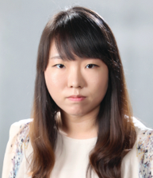
Minah Han
Research Associate · Sejong Science Fellow
CT image quality evaluation, CT denoising with deep learning
Researchers advancing medical imaging through artificial intelligence, reconstruction, and computational imaging.

Research Associate · Sejong Science Fellow
CT image quality evaluation, CT denoising with deep learning
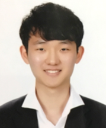
Research Associate · Sejong Science Fellow
CT denoising with deep learning
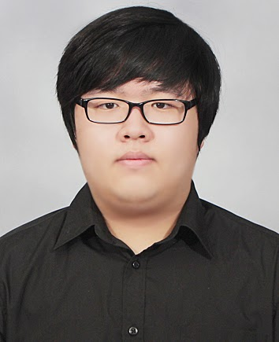
Postdoctoral Scholar
Deep learning applications for low-dose CT and sparse-view CT
M.S./Ph.D. Student
Deep learning applications for metal artifact reduction
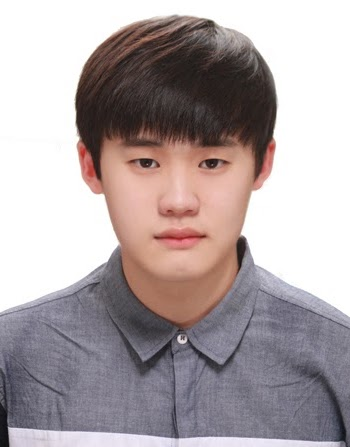
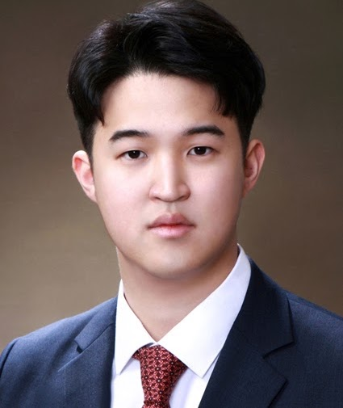
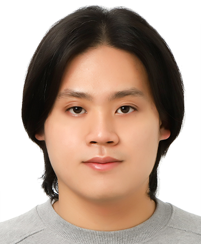
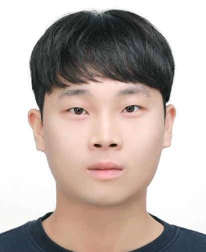
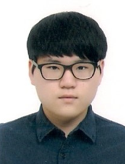
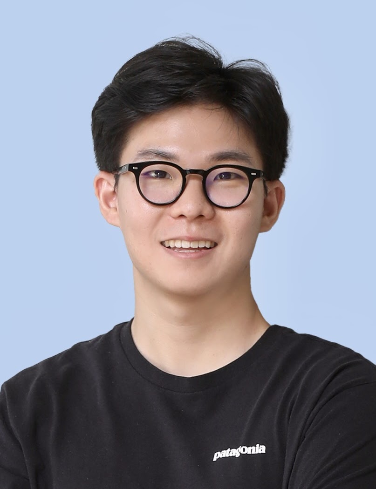
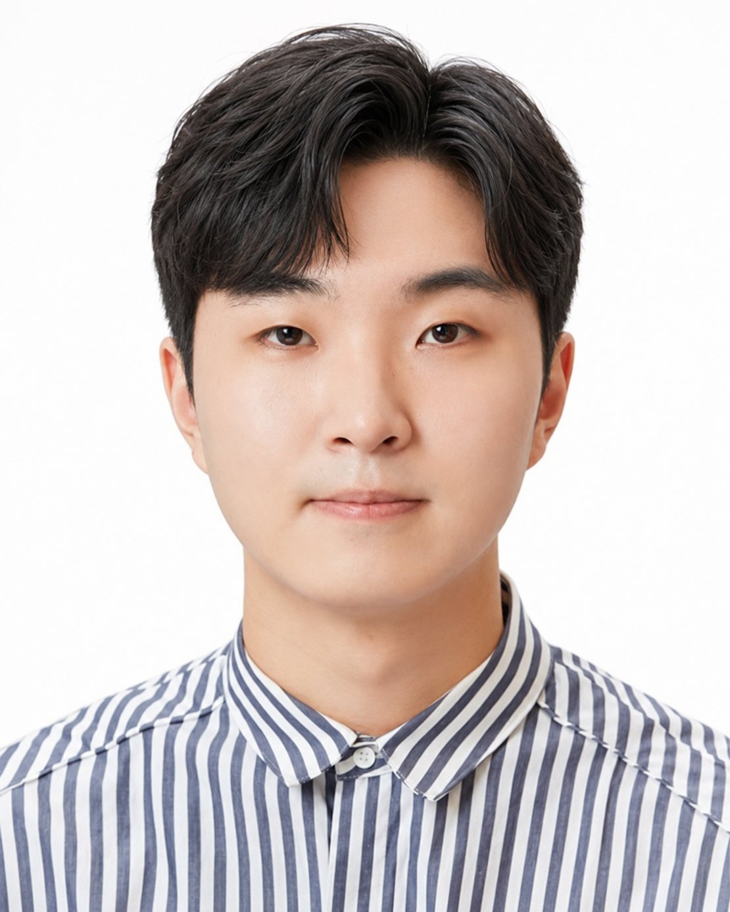
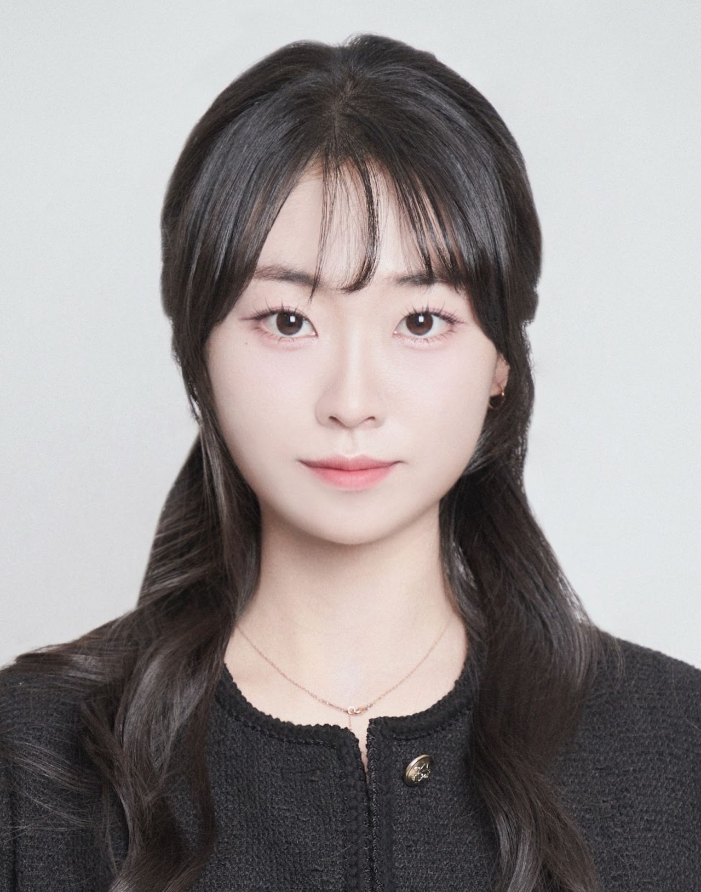
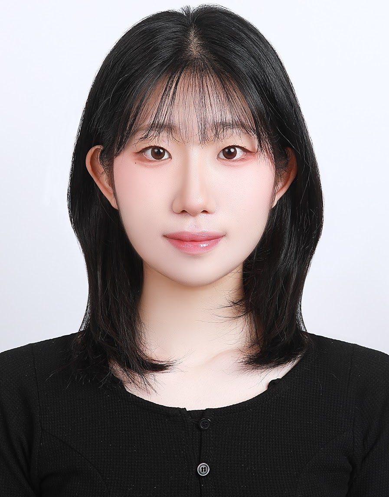
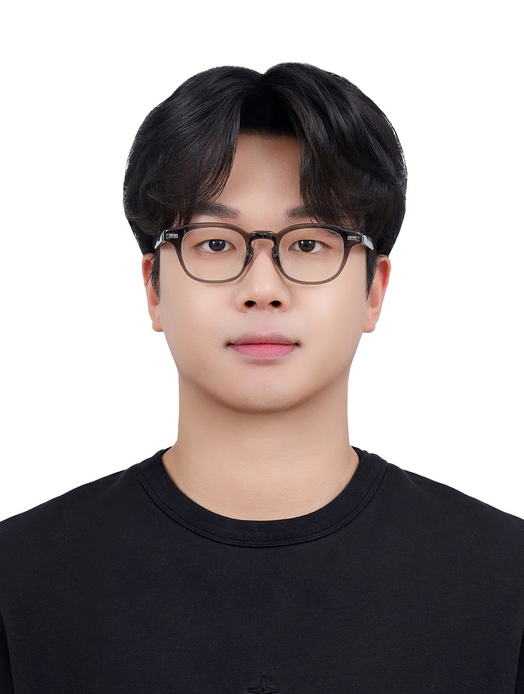
M.S./Ph.D. Student
Deep learning applications for metal artifact reduction
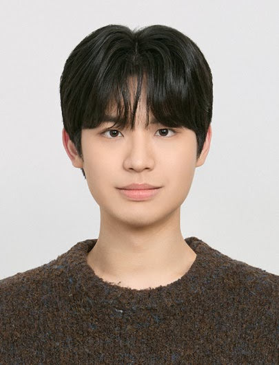